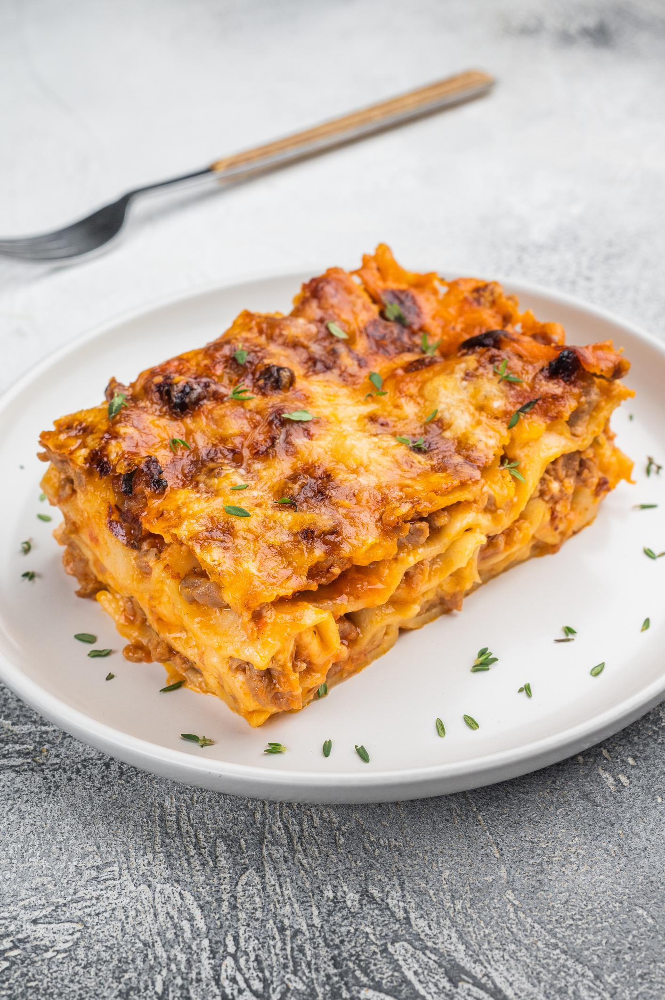
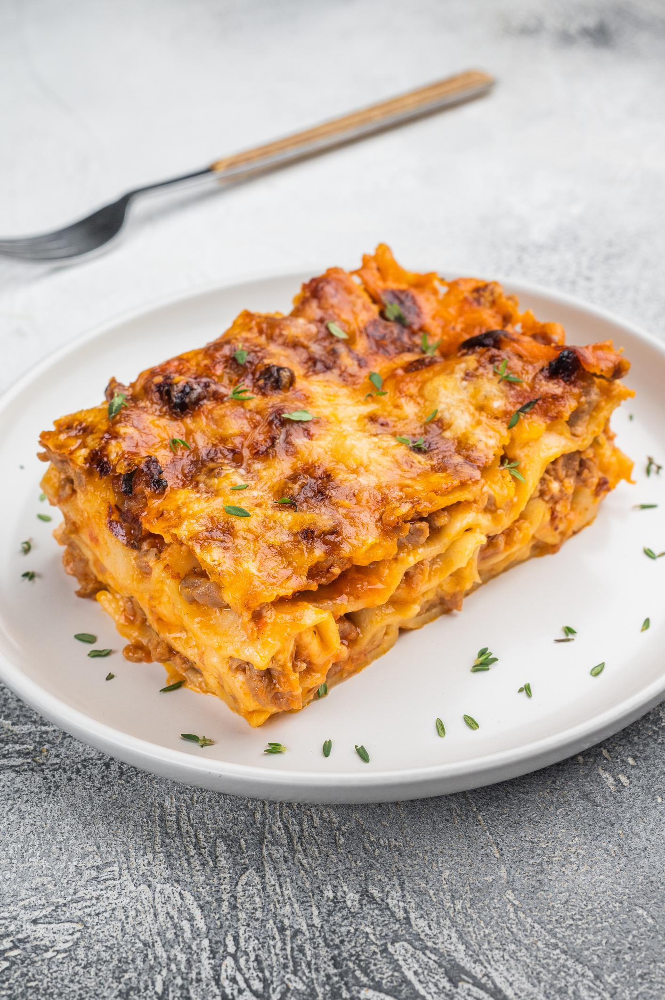
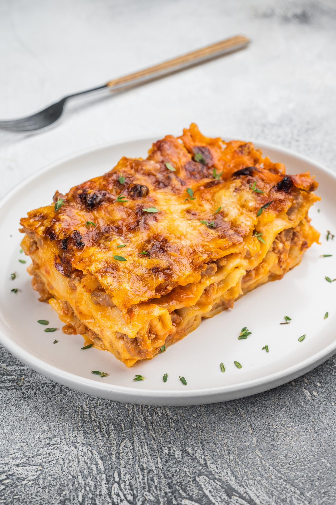

Lasagna is a hearty, comforting baked pasta dish built in generous layers. Wide sheets of pasta alternate with rich fillings—typically a slow-simmered meat or vegetable sauce, creamy béchamel or ricotta, and plenty of melted cheese. As it bakes, the flavors meld and the top turns golden and slightly crisp, while the inside stays soft and deeply savory. Each slice reveals distinct strata, making it as satisfying to look at as it is to eat.
Rooted in Italian cooking but beloved worldwide, lasagna is endlessly adaptable. Classic versions feature beef ragù and béchamel, while variations swap in spinach, mushrooms, roasted vegetables, or different cheeses to suit taste and tradition. It’s a dish made for sharing—often better the next day—carrying that cozy, celebratory feel of a meal that brings people together around the table.